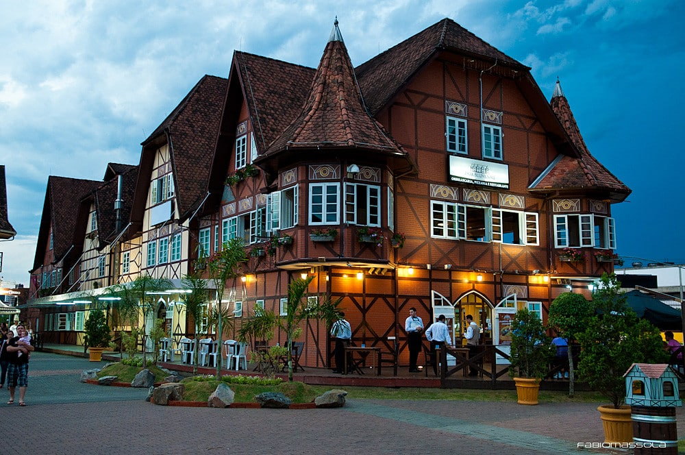

Título |
Descrição |
Imagem |
| Entra21 Edição 2022 - Estadual |
O processo seletivo é fundamental para escolher os candidatos que futuramente serão aqueles profissionais que fomentarão o setor de tecnologia de Santa Catarina. A cada edição vem crescendo o número de candidatos por vaga, por isso fique ligado nas etapas e boa sorte! |
|
| HACKATHON TECH RECRUITER PEOPLE |
Está confirmado para os dias 8 e 9 de abril de 2022, o Hackathon Tech Recruiter People, a primeira maratona de universitários e profissionais para a área de recursos humanos das empresas de tecnologia e inovação do Estado. Saiba como participar.
|
 |
| +devs2blu |
Lançado em outubro de 2021, trata-se de um programa de estudos completo em Java - uma das linguagens de programação mais utilizadas pelas empresas - e com um super reforço em inglês, imprescindível para seu futuro. A capacitação é totalmente gratuita! |
 |
| POR QUE BLUMENAU? |
Em Blumenau existem leis e incentivos para a área de empreendedorismo e inovação. Uma das leis busca fomentar um amplo diálogo entre as empresas, setores públicos e universidades na promoção da inovação. A legislação também proporciona maior segurança jurídica, o que estimula o desenvolvimento científico e tecnológico de Blumenau. |
 |
| C# (presencial) |
É uma linguagem de programação orientada a objetos, que foi desenvolvida pela Microsoft e faz parte da plataforma .NET. Embora a linguagem C# tenha sido criada do zero, foi baseada na linguagem C++ e tem muitos elementos da linguagem Pascal e Java. |
 |
| Java (presencial e online) |
Linguagem de programação orientada para objetos que permite construir aplicações para utilização na World Wide Web (www). Trata-se de uma linguagem concebida para ser multiplataforma, ou seja, para poder ser executada praticamente em qualquer máquina e com qualquer sistema operativo. |
 |